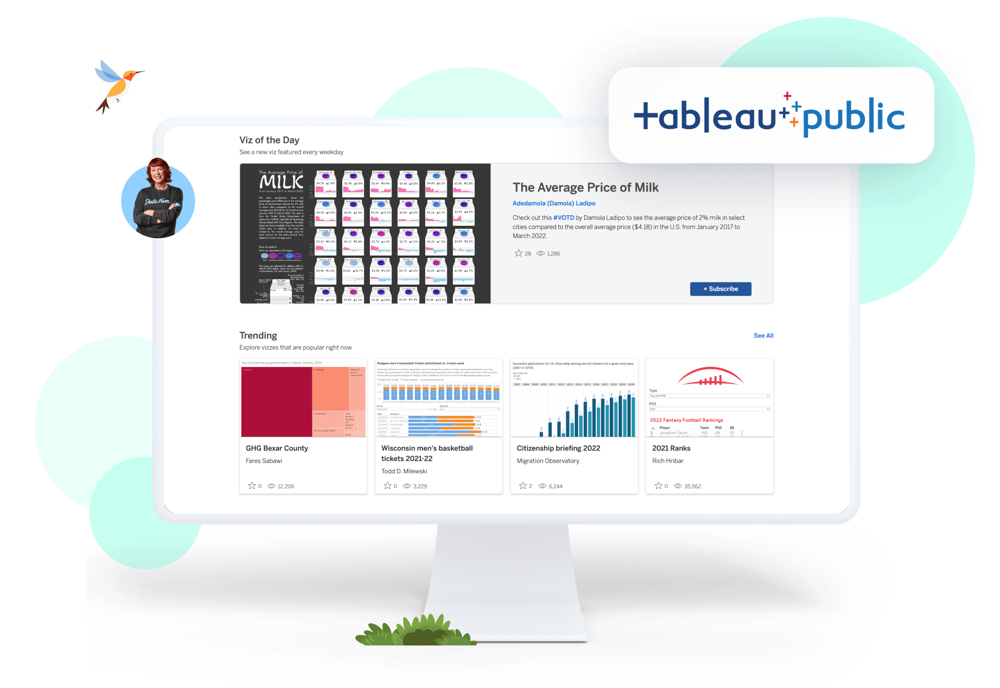
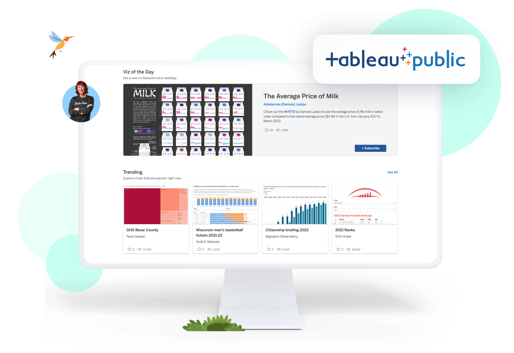

10Alytics, a major superstore wanted to find ways to serve its customers better. At the end of the analysis, recommendations were made on what products to stock up on, and what type of customers to drive marketing campaigns for to increase revenue.
 

TopBase, a telecommunications service provider is experiencing a rising number of customer churns. To gain insight, they seek to explore and delve into the challenges. The goal is to identify key factors contributing to customer churn, analyze patterns, and formulate solutions to minimize customer churn.

MEKKO Retail Inc. is a global retail chain with multiple departments ranging from
Books to Automotive. With its vast presence in different countries, it serves
customers daily. As the company expands, it's becoming increasingly challenging for the
management to keep regular track of customer demographics, preferences, and
other vital details that can help in improving sales and customer satisfaction.

All things PostgreSQL- from queries to optimization.